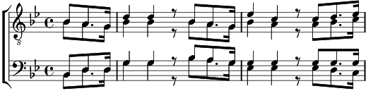

1. La route est dure sur la montagne
Mais nous marchons avec courage
Neige et soleil, montagnes aimées
Dans la splendeur de l'ouragan.
Neige et soleil, montagnes aimées
Soyez bénis pour vos présents.
Refrain:
Sur nos monts tout-puissants
L'on n'entend que le vent
L'on ne voit que le ciel
L'on ne sent que le soleil
Au revoir (quater)
Nous allons chercher le vent.
2. Le pic se dresse loin de la terre
Mais nous marchons vers la lumière
Dans l'ouragan, les cœurs qui chantent
Sont ivres de joie et de vent
Dans l'ouragan, les cœurs qui chantent
Sont délivrés de leurs tourments.
Refrain